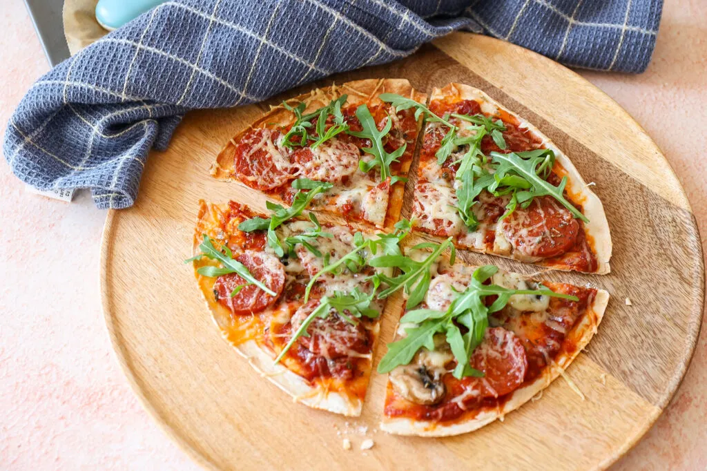

Wrap pizza met champignons en chorizo

Ingredienten
- 4 wraps
- 200 ml tomatensaus/passata
- 150 gr champignons
- 100 gr chorizo
- 2 tl oregano
- 100 gr geraspte kaas
- snufje zwarte peper
- evt rucola
Bereiding
- Verwarm de oven voor op 200 graden
- Maak de champignons schoon en snijd de champignons in plakjes.
- Snijd ook de chorizo in stukjes.
- Besmeer alle wraps met tomatensaus en leg ze op een bakplaat met bakpapier (in ons geval 2 bakplaten).
- Verdeel de champignons en chorizo over de wraps.
- Als laatste wat geraspte kaas, oregano en een snufje peper er overheen.
- Bak de wrap pizza circa 10 minuten in de oven.